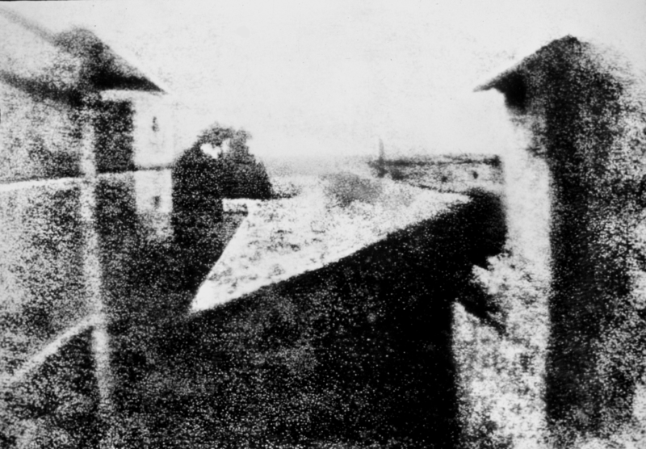

Waar gaat deze website over?
Deze website is bedoeld om een introductie te geven in de verschillende aspecten van fotografie. Fotografie is veel meer dan een fototoestel op een onderwerp richten en op de knop drukken.
Als je echt mooie foto's wilt maken moet je aan verschillende dingen denken zoals; belichting en compositie. Deze website zal de beginnende fotograaf informatie bieden over alle aspecten die komen kijken bij het maken van boeiende foto's.
Wat kan je vinden op deze website?
- We hebben fotografie verdeelt in categorieën:
- - Kort de geschiedenis met tijdlijn.
- - Welke soorten camera's en lenzen er zijn en merken.
- - De verschillende thema's binnen fotografie, denk aan sport fotografie of landschappen.
- - De technieken die gebruikt worden om de foto precies zo te krijgen zoals jij hem wilt hebben.
Wij hopen dat de website je weer iets nieuws kan vertellen!